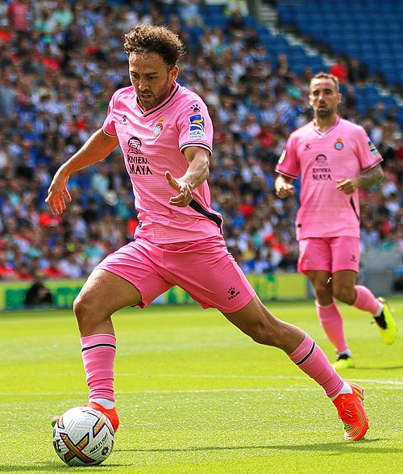
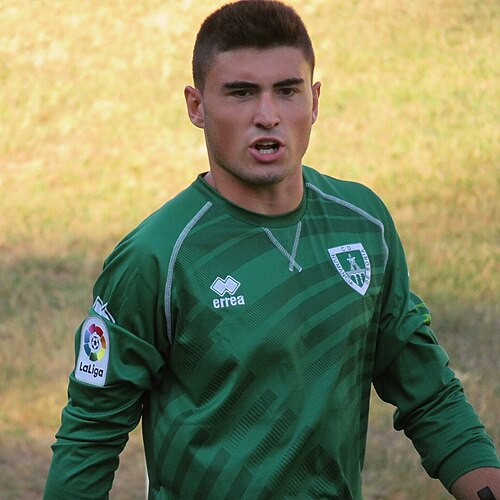
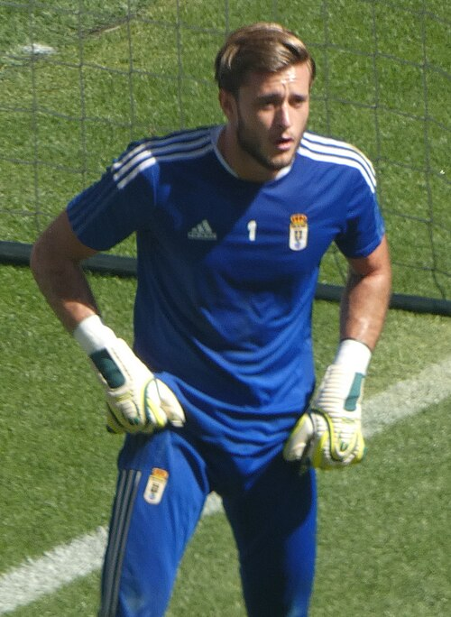

Real Zaragoza Portfolio
Current roster, squad value, top assets, U23 assets, honours, and market risk.
Squad Market Score76.7
Squad ARES Score77.3
Average Age27.4
Transfer RiskLow

Real Zaragoza
LaLiga 2 | Spain | Europe
Top Assetcaptain
U23 Assets4
Honours Rows10
ConfidenceHigh
Roster source: Real Zaragoza | Checked 2026-05-24
Market Score vs Age
Squad portfolio shape by age and market score.
X-axis: Player ageY-axis: Market Score
ARESMarketTrendConfidence
How to read: Each point shows how squad age relates to market value.
Position Strength
GK, CB, FB, CM, W, CF portfolio balance.
X-axis: Position groupY-axis: Squad strength
ARESMarketTrendConfidence
How to read: Bars compare strength across the main football position groups.
Current Player Roster
| Player | Age | Position | Minutes / Role | ARES | Market | Tier | Trend | Confidence |
|---|---|---|---|---|---|---|---|---|
| CMFReal Zaragozacaptain | 26 | MF | 1648 estimated minutes / current squad | 70.3 | 89.0 | Core Starter | Rising | Medium |
| PIDFReal ZaragozaPablo Insua | 33 | DF | 1670 estimated minutes / current squad | 74.7 | 87.1 | Core Starter | Rising | Medium |
| DTDFReal ZaragozaDani Tasende | 27 | DF | 2901 estimated minutes / current squad | 71.3 | 86.9 | Core Starter | Rising | Medium |
| MGKReal ZaragozaMonterrey | 23 | GK | 1129 estimated minutes / current squad | 68.7 | 86.8 | Rising Asset | Rising | Medium |
| VMFReal Zaragozavice-captain | 18 | MF | 1222 estimated minutes / current squad | 76.7 | 84.1 | Rising Asset | Rising | Medium |
| CPDFReal ZaragozaCarlos Pomares | 28 | DF | 862 estimated minutes / current squad | 88.1 | 80.6 | Core Starter | Stable | Medium |
| ARDFReal ZaragozaAleksandar Radovanović | 23 | DF | 2253 estimated minutes / current squad | 75.9 | 80.1 | Rising Asset | Stable | Medium |
| TMMFReal ZaragozaToni Moya | 24 | MF | 1987 estimated minutes / current squad | 71.8 | 77.5 | Core Starter | Stable | Medium |
 Keidi Bare | 28 | MF | 1690 estimated minutes / Rotation / role player | 79.8 | 77.2 | Rising Asset | Falling | Medium |
| AGKReal ZaragozaAlavés | 33 | GK | 1502 estimated minutes / current squad | 77.0 | 76.0 | Core Starter | Stable | Medium |
| DGFWReal ZaragozaDani Gómez | 27 | FW | 1307 estimated minutes / current squad | 86.7 | 74.1 | Core Starter | Stable | Medium |
| NNFWReal ZaragozaNEC Nijmegen | 30 | FW | 2203 estimated minutes / current squad | 78.4 | 73.8 | Core Starter | Rising | Medium |
 Gaizka Campos Bahillo | 29 | GK | 3146 estimated minutes / Projected starter | 79.1 | 72.9 | Core Starter | Rising | Medium |
| 3CMFReal Zaragoza3rd captain | 31 | MF | 2584 estimated minutes / current squad | 77.4 | 71.8 | Core Starter | Stable | Medium |
| TDFReal ZaragozaTachi | 30 | DF | 1971 estimated minutes / current squad | 74.9 | 70.1 | Core Starter | Stable | Medium |
| JSDFReal ZaragozaJuan Sebastián | 30 | DF | 1711 estimated minutes / current squad | 76.6 | 69.7 | Core Starter | Stable | Medium |
 Joan Femenías | 29 | GK | 2578 estimated minutes / Projected starter | 73.7 | 66.7 | Rotation Value | Flat | Medium |
| SBFWReal ZaragozaSinan Bakış | 19 | FW | 1280 estimated minutes / current squad | 81.3 | 66.7 | Rising Asset | Rising | Medium |
| MSFWReal ZaragozaMario Soberón | 33 | FW | 2011 estimated minutes / current squad | 86.7 | 66.4 | Core Starter | Stable | Medium |
U23 Assets
| Player | Age | Position | Market | Reason |
|---|---|---|---|---|
| MGKReal ZaragozaMonterrey | 23 | GK | 86.8 | Current club roster row parsed from Wikipedia. |
| VMFReal Zaragozavice-captain | 18 | MF | 84.1 | Current club roster row parsed from Wikipedia. |
| ARDFReal ZaragozaAleksandar Radovanović | 23 | DF | 80.1 | Current club roster row parsed from Wikipedia. |
| SBFWReal ZaragozaSinan Bakış | 19 | FW | 66.7 | Current club roster row parsed from Wikipedia. |
Club Honours And Trophies
| Competition | Type | Count | Years | Source |
|---|---|---|---|---|
| Segunda División Winners | Team honour | 1 | 1977 | https://en.wikipedia.org/wiki/Real_Zaragoza |
| Winners | Team honour | 1 | 1977 | https://en.wikipedia.org/wiki/Real_Zaragoza |
| Copa del Rey Winners | Team honour | 6 | 1963, 1965, 1985, 1993, 2000, 2003 | https://en.wikipedia.org/wiki/Real_Zaragoza |
| Winners | Team honour | 6 | 1963, 1965, 1985, 1993, 2000, 2003 | https://en.wikipedia.org/wiki/Real_Zaragoza |
| Supercopa de España Winners | Team honour | 1 | 2004 | https://en.wikipedia.org/wiki/Real_Zaragoza |
| Winners | Team honour | 1 | 2004 | https://en.wikipedia.org/wiki/Real_Zaragoza |
| UEFA Cup Winners' Cup Winners | Team honour | 1 | 1994 | https://en.wikipedia.org/wiki/Real_Zaragoza |
| Winners | Team honour | 1 | 1994 | https://en.wikipedia.org/wiki/Real_Zaragoza |
| Inter | Team honour | 1 | 1963 | https://en.wikipedia.org/wiki/Real_Zaragoza |
| Winners | Team honour | 1 | 1963 | https://en.wikipedia.org/wiki/Real_Zaragoza |
Transfer Needs
| Need | Position | Reason | Priority | Suggested Profile |
|---|---|---|---|---|
| Role security and U23 depth | Depth risk review | Squad portfolio balance uses ARES score, market score, age curve, and roster coverage. | Medium | Current roster players sorted by Market Score |